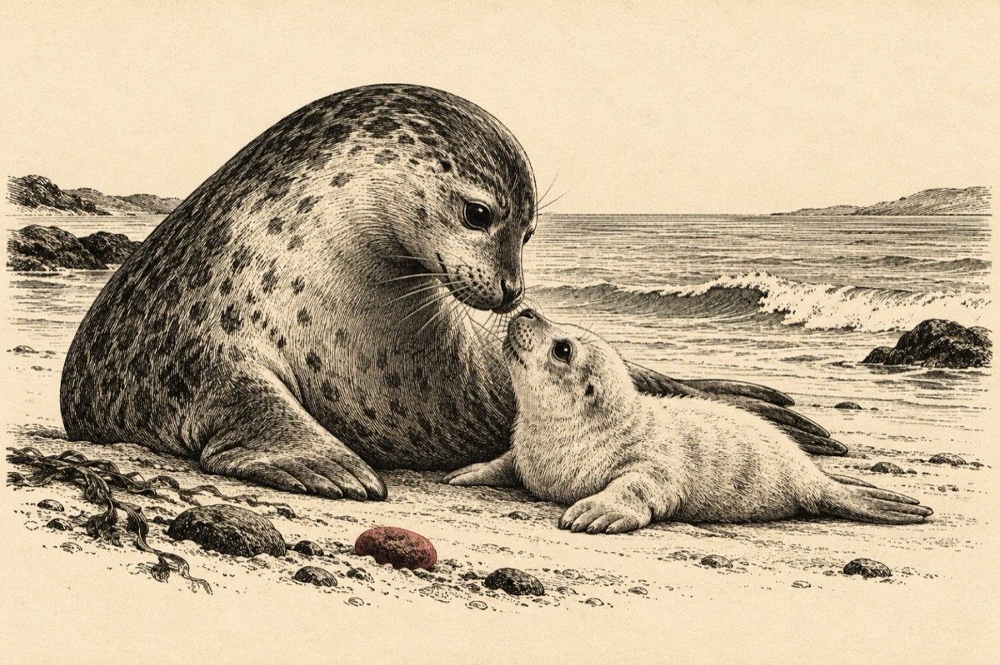

Puiul de focă
Ca o barcă eșuată
Arată la prima vedere
dar ea pe plaja așteaptă
Că burtica hrană-i cere.
Mama e la pescuit
Și înoată după pește
Iat-o acuma c-a venit
Puiul a primit de veste.
Printr-un sunet el o strigă
Mama focă vine-n grabă
Și-i dă puiului să sugă
Plecând iar pe-ocean la treabă
Și așa se tot petrece
Până puiul dse mărește
Mama sa îl părăsește
Puiul pleacă după pește
Și pe seama lui trăiește.
Vasile Groza
Apare și în: Poezii cu animale.